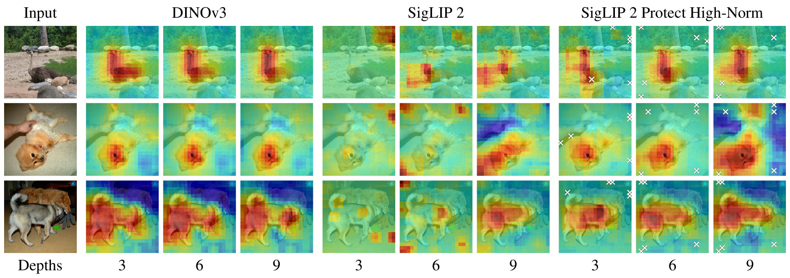
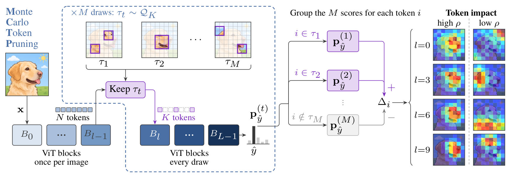
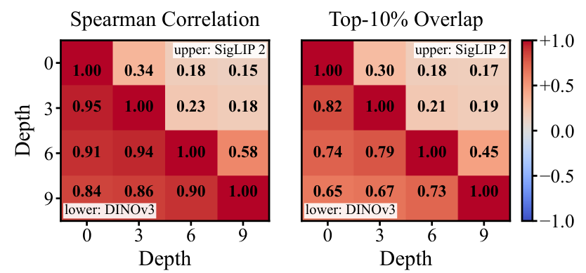
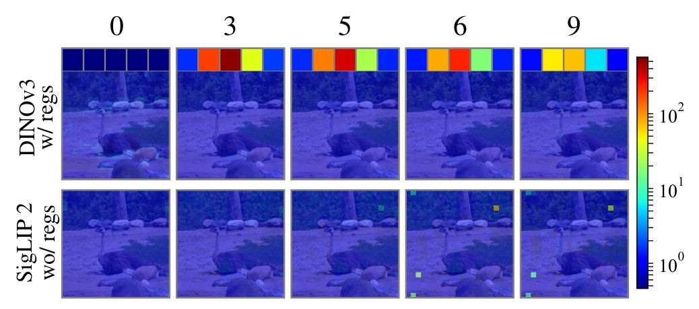
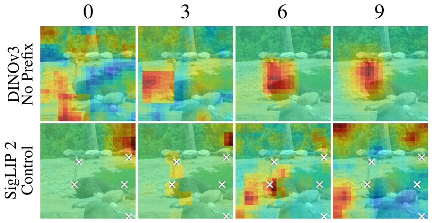

Token Pruning Needs a Protected Sink Token:
Coherent Spatial Aggregation in Vision Transformers
Julian Wyatt
James Willoughby
Allison Clement
Irina Voiculescu
Department of Computer Science, University of Oxford
arXiv preprint, 2026
Abstract Vision Transformers (ViTs) are a predominant architecture for computer vision, with token reduction emerging as a popular paradigm to improve their efficiency. Prior work compares reduction algorithms, but not how models respond to them, nor how their response changes with model depth. We propose Monte Carlo Token Pruning (MCTP), which estimates each token’s impact on the prediction when tokens are explicitly removed during the forward pass. Applying MCTP to recent pretrained models, we observe that most, such as DINOv3, maintain a similar ranking of token importance at every depth (high Coherent Aggregation), while SigLIP 2 does not. This coherence requires predictions to survive pruning, which depends on keeping high-norm “sink” tokens: prefix tokens are kept by design, while prefix-free SigLIP 2 forms them on patch tokens, which pruning may remove. We show that in removing DINOv3’s prefix tokens, its predictions and coherence collapse, while protecting only 5 tokens for SigLIP 2 cuts the token impact outside the object’s bounding box by up to 62%. Beyond this, MCTP offers a post-hoc method to evaluate how a pretrained ViT responds to pruning, and suggests that token reduction methods should keep “sinks”.

Approach
Monte Carlo Token Pruning (MCTP) measures how much each patch token of a pretrained Vision Transformer matters when tokens are removed inside the network. A linear-probed model is pruned once, at the input of block \(l\). Blocks \(0\) to \(l-1\) run once per image; then, in each of \(M = 1{,}000\) draws, about 10% of the patch tokens, sampled as random square regions, continue through the remaining blocks together with the prefix tokens ([CLS] and registers). For each token \(i\), the probability of the unpruned top-1 class \(\hat{y}\) over the draws that keep it is compared with the draws that remove it:
Because every draw reuses the cached blocks before \(l\), a 1,000-draw run at \(l = 6\) costs about as much as 47 full forward passes. Repeating this at several depths shows whether a model ranks its tokens the same way wherever it is pruned.

Coherent Aggregation
A model shows Coherent Aggregation when its token impact maps rank tokens the same way at every pruning depth. Over the ImageNet-1k validation set, DINOv3’s maps agree closely across depths (Spearman correlation 0.84–0.95), while SigLIP 2’s do not (0.15–0.58).

Sink Tokens
Coherence needs predictions that survive pruning, and that depends on keeping the high-norm “sink” tokens that hold global context. DINOv3’s sinks are mainly its registers, which are prefix tokens and so are never pruned. SigLIP 2 has no prefix tokens: from around block 6 its sinks form on a few patch tokens, which pruning can remove. Removing DINOv3’s prefix tokens at the point of pruning breaks its coherence, while protecting SigLIP 2’s five highest-norm tokens moves its impact onto the object; five random tokens do not.


Off-box mass \(m\) measures how much of a map’s positive impact falls outside the object’s bounding boxes, normalised so that a uniform map scores 1 (lower is better). Stability is the share of draws at \(l = 6\) whose top-1 prediction matches the unmodified model’s unpruned prediction.
| Intervention | \(m\), \(l=0\) | \(m\), \(l=3\) | \(m\), \(l=6\) | \(m\), \(l=9\) | Stability, \(l=6\) |
|---|---|---|---|---|---|
| DINOv3 B/16 | 0.29 | 0.30 | 0.30 | 0.29 | 49.4% |
| Prefix removed | 0.89 | 0.82 | 0.41 | 0.29 | 3.9% |
| SigLIP 2 B/16 | 0.94 | 1.17 | 0.99 | 0.89 | 8.7% |
| Baseline (matched) | 0.93 | 1.14 | 0.95 | 0.87 | 8.7% |
| Top five protected | 0.93 | 0.67 | 0.36 | 0.54 | 36.6% |
| Test-time registers | 1.08 | 1.13 | 0.40 | 0.61 | 30.9% |
| Random five protected | 1.00 | 1.16 | 1.02 | 0.93 | 11.7% |
| Empty register | 1.06 | 1.17 | 0.98 | 0.88 | 8.7% |
Over the ImageNet-1k validation set. DINOv3 rows use a probe on mean-pooled patch tokens. Protected tokens are excluded from the map scores, and the matched baseline excludes the top-five positions from the unmodified SigLIP 2 maps.
Conclusion
- Most pretrained ViTs, such as DINOv3, rank token importance similarly whichever depth they are pruned at (high Coherent Aggregation); SigLIP 2 does not.
- Coherence requires predictions to survive pruning, which depends on keeping high-norm “sink” tokens. Removing DINOv3’s prefix tokens collapses its predictions and coherence.
- Protecting only 5 of SigLIP 2’s 441 patch tokens cuts the token impact outside the object’s bounding box by up to 62%, matching or beating test-time registers without changing the model’s activations.
- Token reduction methods should keep sinks.
Code
The code, the DINOv3 and SigLIP 2 linear probes and a demo notebook are on GitHub. The notebook computes token impact maps at depths 0, 3, 6 and 9 for DINOv3 and SigLIP 2 on any image, and runs on a laptop CPU in about 3 minutes.
Citation
@misc{wyatt2026tokenpruning,
title = {Token Pruning Needs a Protected Sink Token: Coherent Spatial Aggregation in Vision Transformers},
author = {Julian Wyatt and James Willoughby and Allison Clement and Irina Voiculescu},
year = {2026},
eprint = {2611.31025},
archivePrefix = {arXiv},
primaryClass = {cs.CV},
url = {https://arxiv.org/abs/2611.31025}
}